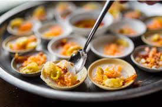
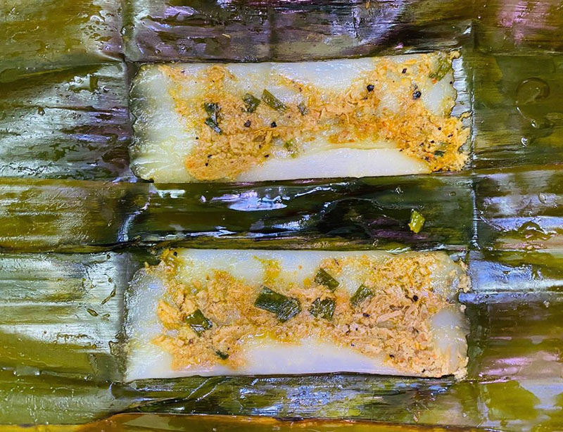
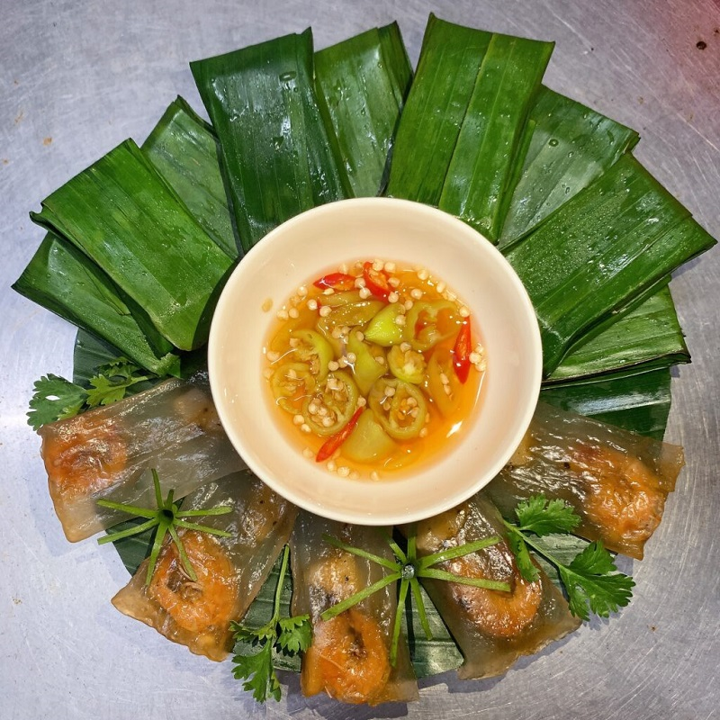
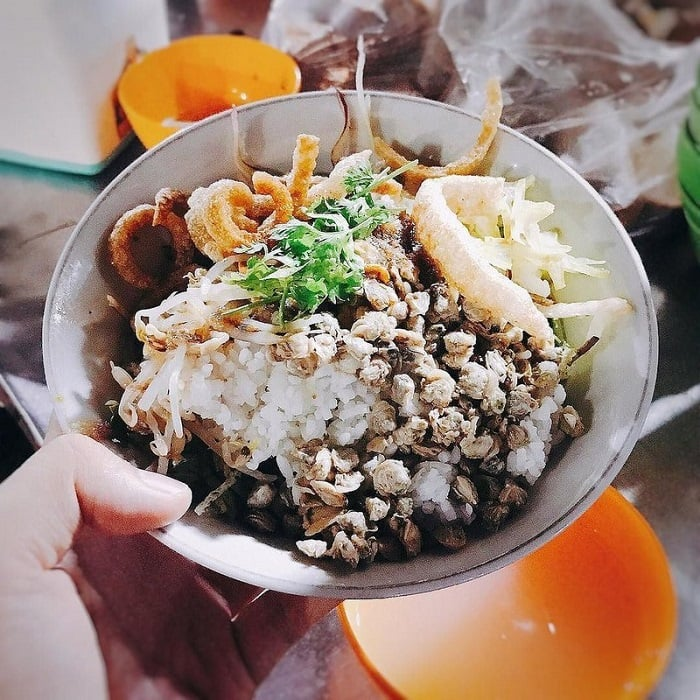
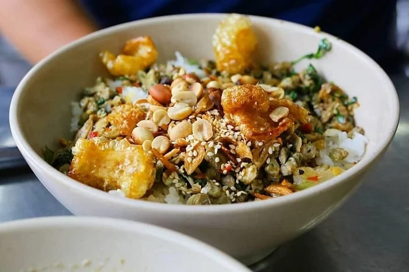
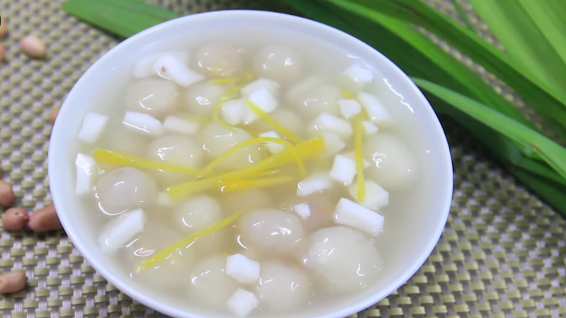
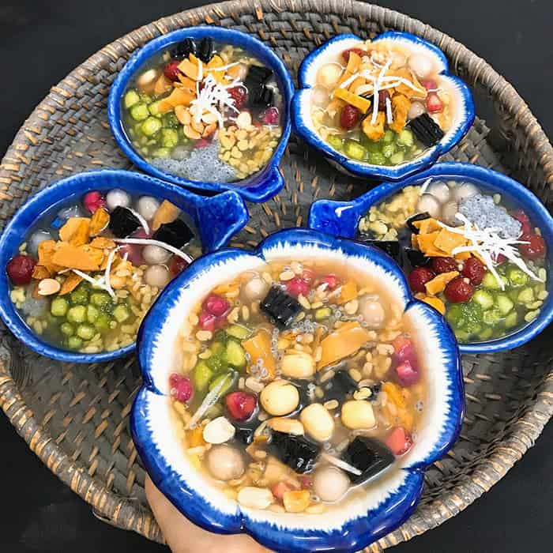
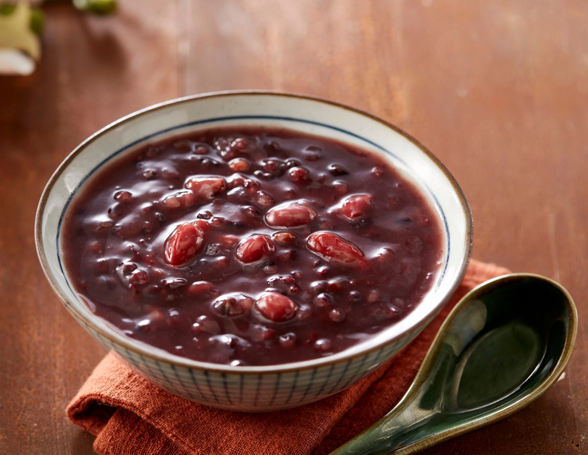
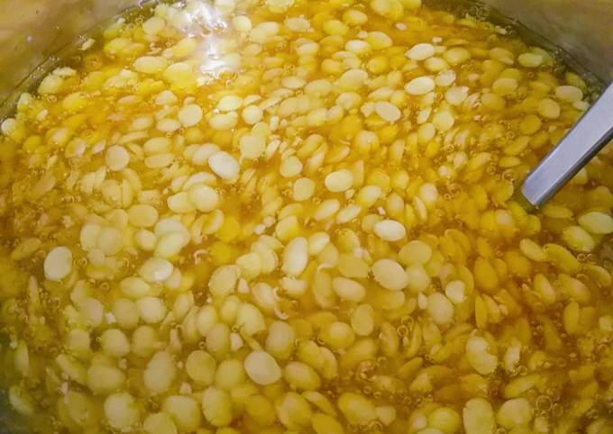

Khám phá ẩm thực Huế
Khám Phá Ẩm Thực Huế: Những Món Đặc Sản Và Những Điều Cần Làm Khi Đến Huế
Huế, thành phố mộng mơ với những di tích lịch sử và cảnh quan thiên nhiên tuyệt đẹp, còn nổi bật với nền ẩm thực phong phú, tinh tế và mang đậm dấu ấn văn hóa cung đình. Đến Huế, du khách không chỉ được chiêm ngưỡng những di tích cổ kính, mà còn được thưởng thức những món ăn đặc sản hấp dẫn, đậm đà hương vị, phản ánh sự sáng tạo và tài hoa của người dân nơi đây.
Dưới đây là một số món ăn đặc sản mà bạn không thể bỏ qua khi đến Huế cùng với những hoạt động thú vị để làm trong chuyến du lịch của mình.
1. Combo bèo-nậm-lọc Huế
Đối với admin thì 3 món ăn này phải luôn đi kèm với nhau, nếu chỉ cần loại bỏ đi 1 trong 3 yếu tố đó thì hương vị món ăn sẽ bị giảm đi 1 phần khá lớn.
Trước hết hình dáng của các loại bánh đã có sự khác biệt:
-
Bánh bèo: là những chiếc bánh nhỏ xíu được làm từ bột gạo, hấp lên mềm mịn, ăn kèm với tôm chấy, mỡ hành, và nước mắm pha chế đậm đà.

Bánh bèo chén
-
Bánh nậm được làm từ bột gạo, nhân tôm hoặc thịt, cuốn trong lá chuối, hấp lên cho đến khi mềm và thơm

Bánh nậm
-
Trong khi đó, bánh lọc có 2 loại nổi tiếng là bánh bột lọc Huế trần (Bánh lọc trần Huế) và bánh bột lọc Huế gói lá chuối (Bánh lọc Huế gói). Hai loại bánh đều làm từ những nguyên liệu giống nhau là bột lọc tươi, nhân tôm thịt. Nhưng cách chế biến lại khác nhau, đem đến hình thức và mùi vị cũng rất khác nhau.

Bánh bột lọc
Đặc biệt, bánh bột lọc Huế nổi tiếng không phải vì kích thước bánh lọc to, mà gây thương nhớ bởi vị đậm đà của tôm rim và thịt mỡ. Độ ngon của bột lọc Huế và độ cay mặn của nước mắm chấm bánh.
Giá thành: rất là rẻ dành cho người dân thành phố Huế nơi đây, khi mà chỉ cần từ 15 đến 25 nghìn thì bạn đã có thể mua được 1 bì đầy đủ cả 3 loại bánh được kể trên. Tất cả đều sẽ được gói riêng lẻ bằng lá dong (lá chuối) nhằm giữ hơi nóng của những chiếc bánh mới ra lò.
Địa điểm: Chợ Đông Ba, quán ăn bèo nậm lọc nằm ở đường Lê Viết Lượng. Nếu mình gặp may mắn thì bắt gặp ngay 1 dì lớn tuổi đi dạo quanh bán bánh đựng trong những thúng gánh vác trên vai.
Note: Bánh bèo nên chọn loại bánh bèo khay chén nhỏ bởi vì nó ngon hơn bánh bèo trong dĩa
2. Cơm hến
Cơm hến đã trở thành một trong những món ngon “khó cưỡng” đối với du khách. Đến với vùng đất cố đô, bạn nên ít nhất một lần nếm thử cơm hến. Đây là món ăn mang lại cho thực khách cảm giác vừa thanh đạm lại vô cùng đậm đà phù hợp với đông đảo du khách. Tuy nhiên, nếu không biết cách thưởng thức, món ăn này sẽ trở nên tanh và mất đi vị đậm đà.
Một số quán ăn nổi tiếng:
-
Cơm hến – bún hến Lành
Đến với quán bún hến Lành, bạn sẽ không phải băn khoăn ăn gì ở Huế. Nơi đây có món cơm hến được chế biến theo công thức riêng, mang lại hương vị thơm ngon đặc biệt. Khi đó, bạn ăn tới đâu sẽ cảm nhận sự mặn mà, ngọt thanh đến tận cuống họng.
Địa chỉ: 38 Ngô Gia Tự, thành Phố Huế.
Giá thành: 8 - 10 nghìn / tô.
Giờ mở cửa tham khảo: 06:00 – 11:00.

Cơm hến Lành
-
Cơm hến Huế Bà Cam bình dân
Món ăn có đầy đủ cơm, hến, rau thơm, hành, lạc, cay cay đậm vị. Chính vì món ăn ở đây vô cùng chất lượng nên quán luôn đông đúc khách ra vào, thậm chí bạn phải chờ mới được thưởng thức.
Địa chỉ: 49 Tùng Thiện Vương, phường Vỹ Dạ, thành Phố Huế.
Giá thành: 10 - 50 nghìn / tô.
Giờ mở cửa tham khảo: 06:00 – 20:00.

Quán cơm hến bà Cam
3. Bún bò
Bún bò Huế là một trong những món ăn đặc sản nổi tiếng của Huế và miền Trung Việt Nam. Món ăn này có hương vị đặc trưng, kết hợp giữa sự cay nồng, mặn mà và vị ngọt thanh từ xương hầm, tạo nên một trải nghiệm ẩm thực vô cùng hấp dẫn.
Thành phần chính của bún bò Huế
Món bún bò Huế có những thành phần rất đặc trưng, mỗi thứ một chút tạo nên sự hài hòa của hương vị. Thành phần chính bao gồm:
-
Bún: Sợi bún Huế thường to và dai, được làm từ gạo, khác với sợi bún ở những vùng khác. Độ dai của bún khi kết hợp với nước lèo sẽ tạo ra cảm giác rất đặc biệt, giúp người ăn cảm nhận được từng sợi bún thấm đượm hương vị nước dùng.
-
Nước dùng: Nước dùng của bún bò Huế rất đậm đà, được nấu từ xương bò, kết hợp với nhiều gia vị như mắm ruốc, ớt, hành, sả và một số loại gia vị khác. Mắm ruốc là gia vị không thể thiếu trong món ăn này, tạo nên mùi thơm đặc trưng và hương vị đậm đà, đặc biệt cho nước lèo.
-
Thịt bò: Bún bò Huế thường có nhiều loại thịt bò như bò tái, bò gân, bò sách hoặc thịt bắp bò. Thịt bò được thái mỏng và chín tới, vừa giữ được độ mềm mại vừa thấm đượm hương vị của nước lèo.
-
Giò heo: Một số quán bún bò Huế còn cho thêm giò heo vào tô bún, giúp món ăn thêm phần phong phú, béo ngậy.
-
Gia vị và rau sống: Món bún này không thể thiếu những loại rau sống như rau húng quế, giá đỗ, ngò rí và đôi khi là vài lát chanh hoặc ớt tươi để tăng thêm độ tươi ngon và sự cay nồng.

Một bát bún bò đầy đủ có khiến bạn xao xuyến? (Ảnh: sưu tầm)
Giá cả và địa điểm thưởng thức
Về giá cả, bún bò Huế có mức giá khá đa dạng, tùy thuộc vào nơi bạn thưởng thức. Một tô bún bò Huế bình dân có thể dao động từ 20.000 đến 50.000 đồng, nhưng nếu bạn ăn ở những quán cao cấp hay trong những nhà hàng sang trọng, giá có thể lên tới 100.000 đồng hoặc hơn. Tuy nhiên, đối với chất lượng món ăn và hương vị tuyệt vời mà nó mang lại, đây là mức giá hoàn toàn hợp lý.
Nếu bạn có cơ hội đến Huế, đừng quên ghé những quán bún bò nổi tiếng như Bún bò Huế Đông Ba, Bún bò Huế Huyền Anh hoặc các quán bún ở khu vực gần chợ Đông Ba. Ngoài Huế, các thành phố lớn như Hà Nội, TP.HCM, hay Đà Nẵng cũng có rất nhiều quán bún bò Huế ngon.
4. Các món chè Huế - Đặc sản ngọt ngào Miền Trung
Chè Huế là một trong những nét đặc trưng không thể thiếu trong nền ẩm thực miền Trung, đặc biệt là ở thành phố Huế. Với hương vị độc đáo, thơm ngon và đa dạng, chè Huế không chỉ là món ăn tráng miệng mà còn là một phần không thể thiếu trong văn hóa ẩm thực của người dân nơi đây. Những món chè này không chỉ nổi bật với sự kết hợp hài hòa giữa các nguyên liệu mà còn được chế biến một cách tinh tế, thể hiện sự sáng tạo của người Huế.
Chè bột lọc
Chè bột lọc là một món chè nổi tiếng ở Huế, được làm từ bột lọc trong suốt, thường kèm theo những viên nhân đậu xanh hoặc nhân dừa. Đây là một món chè dễ ăn, thanh mát và không quá ngọt, rất phù hợp cho những ai yêu thích những món chè không quá béo.
-
Thành phần: Bột lọc, đậu xanh, dừa nạo, đường, nước cốt dừa.
-
Hương vị: Chè bột lọc có vị ngọt dịu dàng từ đường và nước cốt dừa, kết hợp với sự dẻo dai của những viên bột lọc và vị bùi bùi của đậu xanh, dừa. Khi ăn, bạn sẽ cảm nhận được độ trong suốt và mềm mại của bột lọc hòa quyện cùng hương thơm nhẹ nhàng của dừa và đậu xanh.
-
Giá cả: Món chè này có giá từ 15.000 đến 30.000 đồng/tô tùy theo quán.

Ảnh: Sưu tầm
Chè cung đình
Chè cung đình là món chè không thể thiếu trong các bữa tiệc hoàng gia của triều đình Huế. Đây là một món chè cầu kỳ, đòi hỏi sự tỉ mỉ trong việc chế biến, với nhiều nguyên liệu quý hiếm và đầy đủ các hương vị.
-
Thành phần: Các nguyên liệu gồm đậu xanh, đậu đỏ, đậu ván, trân châu, hạt sen, nhãn nhục, khoai môn, và một số nguyên liệu đặc biệt khác. Tất cả các thành phần này được chế biến riêng biệt và sau đó kết hợp lại với nhau, tạo nên một món chè vừa phong phú, vừa bổ dưỡng.
-
Hương vị: Chè cung đình có sự kết hợp tuyệt vời giữa các loại đậu và các nguyên liệu ngọt, béo như nước cốt dừa và đường phèn. Món chè này mang lại cảm giác ngọt ngào nhưng không quá ngấy, với hương vị thanh mát và đa dạng.
-
Giá cả: Do là món chè đặc biệt, chè cung đình có giá khá cao, dao động từ 50.000 đến 100.000 đồng/tô, tùy thuộc vào nơi bạn thưởng thức.

Ảnh: Sưu tầm
Chè đậu đỏ
Chè đậu đỏ là món chè giản dị nhưng rất được ưa chuộng ở Huế. Đậu đỏ được biết đến với khả năng thanh nhiệt, giải độc và bổ sung năng lượng. Món chè này không chỉ ngon mà còn tốt cho sức khỏe.
-
Thành phần: Đậu đỏ, đường phèn, nước cốt dừa.
-
Hương vị: Chè đậu đỏ có vị ngọt thanh của đường phèn kết hợp với độ bùi của đậu đỏ, tạo nên một món chè thanh đạm, dễ ăn. Nước cốt dừa giúp tạo sự béo ngậy, làm cho món chè trở nên đặc biệt hơn.
-
Giá cả: Món chè này có mức giá khoảng 10.000 đến 20.000 đồng/tô, rất hợp lý và dễ tìm thấy ở bất kỳ quán chè nào tại Huế.

Chè đậu đỏ truyền thống. Ảnh: Sưu tầm
Chè đậu ván
Chè đậu ván là món chè được làm từ đậu ván – một loại đậu rất phổ biến ở miền Trung, với hương vị bùi bùi, ngọt nhẹ và dễ ăn. Đây là món chè không thể thiếu trong những ngày nắng nóng tại Huế.
-
Thành phần: Đậu ván, đường phèn, nước cốt dừa, có thể thêm một ít đá bào.
-
Hương vị: Đậu ván có vị ngọt thanh, kết hợp với nước cốt dừa béo ngậy tạo nên một món chè ngọt mát, dễ ăn, thích hợp cho những ai yêu thích sự thanh tao, nhẹ nhàng.
-
Giá cả: Chè đậu ván thường có giá từ 15.000 đến 25.000 đồng/tô.

Chè đậu ván truyền thống. Ảnh: Sưu tầm
Kết luận
Ẩm thực Huế là một hành trình khám phá vô tận những hương vị đậm đà, tinh tế và độc đáo. Từ những món mặn đầy phong phú như bún bò Huế, cơm hến cho đến những món chè ngọt ngào, thanh mát như chè cung đình, chè bột lọc, chè đậu ván, tất cả đều mang đậm dấu ấn của một nền văn hóa ẩm thực lâu đời và đầy sáng tạo. Mỗi món ăn không chỉ đơn thuần là thức ăn mà còn là một phần của lịch sử, của những câu chuyện văn hóa mà người Huế muốn gửi gắm.
Khám phá ẩm thực Huế không chỉ là thưởng thức các món ăn mà còn là một cách để bạn hiểu thêm về con người, mảnh đất và những giá trị truyền thống của vùng đất cố đô này. Nếu có dịp đến Huế, đừng bỏ qua cơ hội thưởng thức những món ăn ngon tuyệt này, vì mỗi món ăn chính là một phần không thể thiếu của hành trình khám phá vẻ đẹp ẩm thực Việt Nam.
Updated: 03-03-2025